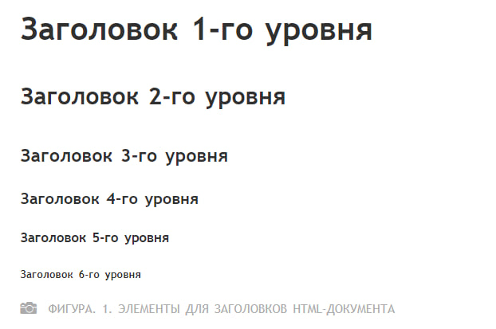

Практическая работа 2
HTML-текст
HTML-текст представлен в спецификации элементами для форматирования и группировки текста. Данные элементы являются контейнерами для текста и не имеют визуального отображения.
Элементы для форматирования текста несут смысловую нагрузку и обычно задают для текста, заключенного внутрь, стилевое оформление, например, выделяют текст жирным начертанием или отображают его шрифтом другого семейства (свойство font-family).
Грамотно отформатированный текст дает понять поисковым системам, какие слова несут важную смысловую нагрузку, по каким из них предпочтительно ранжировать веб-страницу в поисковой выдаче. Вся текстовая информация, отображаемая на сайте, размещается внутри элемента <body>.
Содержание
Элементы для форматирования текста
- Элементы b
- Элементы em
- Элементы i
- Элементы smail
- Элементы strong
- Элементы sub
- Элементы sup
- Элементы ins
- Элементы del
- Элементы mark
Элементы для ввода «компьютерного» текста
Элементы для ввода «компьютерного» текста
абзацы средства переноса текста
HTML-элементы для заголовков>
Заголовки являются важными элементами веб-страницы, они упорядочивают текст, формируя его визуальную структуру. Элементы h1...h6 должны использоваться только для выделения заголовков нового раздела или подраздела./p
При использовании заголовков необходимо учитывать их иерархию, т.е. за h1 должен следовать h2 и т.д. Также не рекомендуется вкладывать в заголовки другие элементы.
Элемент
Заголовок самого верхнего уровня, на странице рекомендуется использовать только один раз, по возможности частично дублируя заглавие страницы. Элемент h1 должен быть уникальным для каждой страницы сайта.
Рекомендуется прописывать в начале статьи, используя ключевое слово в тексте заголовка. Размер шрифта в браузере равен 2em, верхний и нижний отступ по умолчанию 0.67em.
Элемент h2
Представляет подзаголовки элемента h1. Размер шрифта в браузере равен 1.5em, верхний и нижний отступ по умолчанию 0.83em.
Элемент h3
Показывает подзаголовки элемента h2. Размер шрифта в браузере равен 1.17em, верхний и нижний отступ по умолчанию 1em.
Элементы h4, h5, h6
Обозначают подзаголовки четвёртого, пятого и шестого уровня. Размер шрифта в браузере равен 1em / 0.83em / 0.67em, верхний и нижний отступ по умолчанию 1.33em / 1.67em / 2.33em соответственно.
Для всех элементов доступны глобальные атрибуты.
Элементы для форматирования текста
Элемент b
Задаёт полужирное начертания шрифта. Выделяет текст без акцента на его важность.
Элемент em
Отображает шрифт курсивом, придавая тексту значимость.
Для элемента доступны глобальные атрибуты.
Элемент i
Отображает шрифт курсивом.
Для элемента доступны глобальные атрибуты.
Элемент small
Уменьшает размер шрифта на единицу по отношению к обычному тексту.
Для элемента доступны глобальные атрибуты.
Элемент strong
Задаёт полужирное начертание шрифта, относится к элементам логической разметки, указывая браузеру на важность текста.
Для элемента доступны глобальные атрибуты.
Элемент sub
Используется для создания нижних индексов. Сдвигает текст ниже уровня строки, уменьшая его размер.
Для элемента доступны глобальные атрибуты.
Элемент sup
Используется для создания степеней. Сдвигает текст выше уровня строки, уменьшая его размер.
Для элемента доступны глобальные атрибуты.
Элемент ins
Для элемента доступны атрибуты cite и datetime.
Элемент del
Перечёркивает текст. Используется для выделения текста, удаленного из документа.
Для элемента доступны атрибуты cite и datetime.
Элемент mark
Применяется для выделения фрагментов текста в справочных целях, окрашивая блок символов желтым цветом.
Для элемента доступны глобальные атрибуты.
Элементы для ввода «компьютерного» текста
Элемент code
Служит для выделения фрагментов программного кода. Отображает текст моноширинным шрифтом.
Для элемента доступны глобальные атрибуты.
Элемент kbd
Отмечает фрагмент как вводимый пользователем с клавиатуры. Отображает текст моноширинным шрифтом
Для элемента доступны глобальные атрибуты.
Элемент samp
Применяется для выделения результата, полученного в ходе выполнения программы. Отображает текст моноширинным шрифтом.
Для элемента доступны глобальные атрибуты.
Элемент var
Выделяет имена переменных, отображая текст курсивом.
Для элемента доступны глобальные атрибуты.
Элемент pre
Позволяет вывести текст на экран, сохранив изначальное форматирование. Пробелы и переносы строк при этом не удаляются.
Для элемента доступны глобальные атрибуты.
Элементы для оформления цитат и определений
Элемент abbr
Применяется для форматирования аббревиатур. Браузером обычно подчеркивается пунктирной линией. Расшифровка сокращения осуществляется с помощью атрибута title, она появляется при наведении курсора мыши на текст.
Для элемента доступны глобальные атрибуты.
Элемент bdo
Используется для изменения текущего направления текста.
Для элемента доступен атрибут dir
Элемент blockquote
Выделяет цитаты внутри документа, выделяя его отступами и переносами строк.
Для элемента доступен атрибут cite
Элемент q
Используется для выделения коротких цитат. Браузерами заключается в кавычки.
Для элемента доступен атрибут cite
Элемент cite
Применяется для выделения цитат, названий произведений, сносок на другие документы.
Для элемента доступны глобальные атрибуты.
Элемент dfn
Позволяет выделить текст как определение. Несмотря на наличие данного элемента, рекомендуется выделять текст силами CSS.
Для элемента доступен атрибут title
Абзацы, средства переноса текста
Элемент p
Разбивает текст на отдельные абзацы, отделяя друг от друга пустой строкой. Браузер автоматически добавляетверхнее и нижнее внешнее поле margin, равное 1em, при этом поля соседних абзацев «схлопываются».
Для элемента доступны глобальные атрибуты.
Элемент br
Переносит текст на следующую строку, создавая разрыв строки.
Для элемента доступны глобальные атрибуты.
Элемент hr
Используется для разделения контента на веб-странице. Отображается в виде горизонтальной линии.
Для элемента доступны глобальные атрибуты.